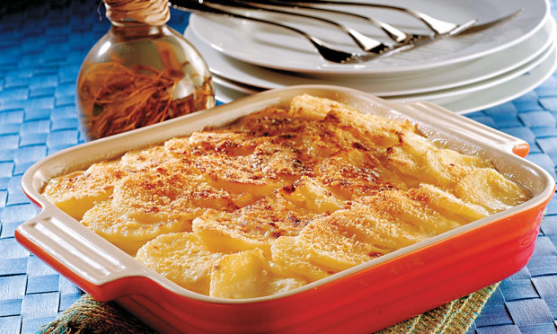

Batata Gratinada

Ingredientes:
750 g de batata
1 dente de alho picado
1/2 colher (sopa) de manteiga
1/2 xícara (chá) de creme de leite fresco
1/2 xícara (chá) de leite
1 colher (sopa) de queijo ralado
Sal e pimenta do reino a gosto
Modo de preparo:
1.Lave as batatas em água corrente e descasque-as.
2.Corte em rodelas finas e ponha em uma panela.
3.Junte o alho picado, a manteiga, o creme de leite, o leite, o sal e a pimenta-do-reino.
4.Cozinhe em fogo baixo até que as batatas fiquem macias, porém firmes.
5.Com uma escumadeira, retire as batatas da panela e disponha-as em um refratário untado.
6.Regue com o líquido do cozimento e polvilhe com o queijo ralado.
7.Leve ao forno até dourar a superfície.
8.Sirva imediatamente.